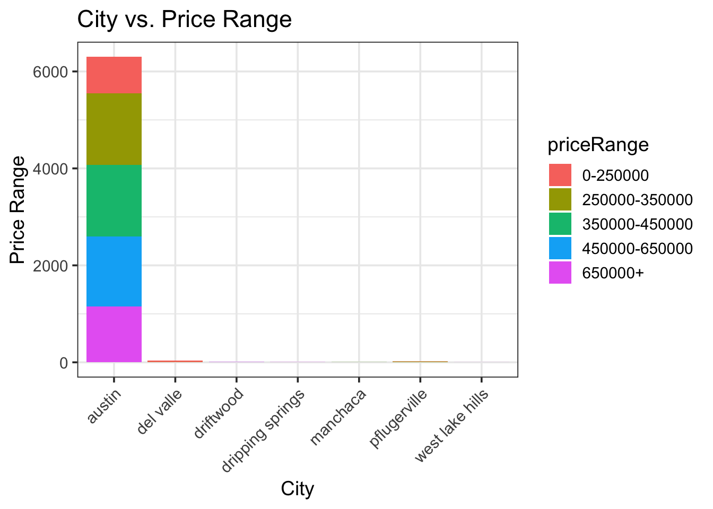
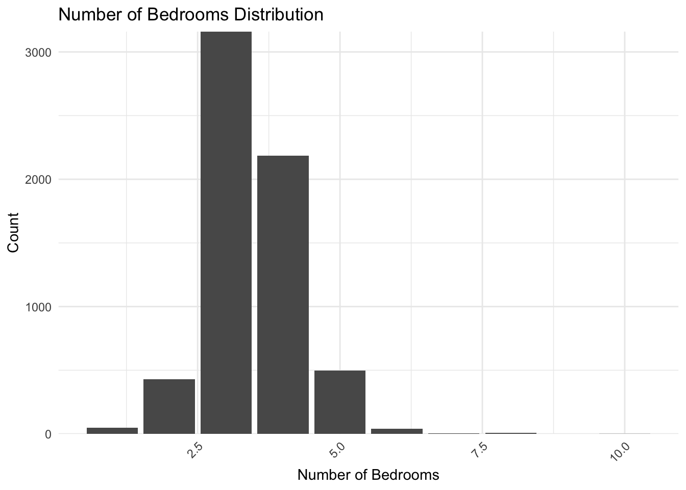

I aim to develop a highly accurate predictive model that estimates the list-price range for properties listed on Zillow using a comprehensive data set. This model will incorporate key variables such as property features, school ratings, and location-based factors to enhance prediction accuracy. The resulting predictive model will be valuable to Zillow, real estate professionals, and potential buyers by providing data-driven insights helping them make informed decisions based on market trends and property features.
Executive Summary
Introduction
Exploratory Data Analysis
The original data set on properties on Zillow contained 7498 observations and 16 variables. Below we can see the first six properties and their data.
Code
Data |>head()
id city
1 1 austin
2 2 austin
3 3 austin
4 4 austin
5 5 austin
6 6 austin
description
1 7300 Annette Cv, Austin, TX 78724 is a single family home that contains 1,419 sq ft and was built in 2007. It contains 2 bedrooms and 3 bathrooms. \n\n\n \n\n\n
2 Extravagant and luxurious 5 bedroom, 4.5 bath property in the beautiful Tarrytown neighborhood. The high-ceilinged main level is window-lined throughout with a clear view of the impressive fenced-in backyard space. In the kitchen custom designed by a French chef, there’s an abundance of drawer space for easy access to all cooking tools. The spacious living area includes a gas fireplace plus indoor/outdoor surround sound speakers. Upstairs the master bedroom has a unique spare space for use as either an office or large spare closet. Each bedroom has soundproof walls between – a perfect floor plan for large families. Use the 5th bedroom as a guest space or even a multi-purpose room. The massive outdoor patio has a fully functioning kitchen, includes an entrance to an indoor half bath, and overlooks the tech-enhanced heated pool. Pool includes a motorized cover that prevents children from entering when unattended – plus, easy maintenance as it keeps out rain and leaves.
3 HIGH RENTABLE AREA! Beautifully kept duplex located minutes away from great restaurants, shopping, and easy access to I-35 and HWY 183! Each unit features 3 bed 2 bath with an amazing floor plan!
4 Great house in the heart of downtown East Austin. Completely remodeled single family home sitting on the back lot 1902 Garden Street just off Chicon. Updated kitchen with stainless appliances, granite counter top, bamboo and vinyl plank flooring. 9 blocks from downtown 5 blocks from Lady Bird Lake. Access through rear on publicly maintained alley with both walking gate and sliding gate to parking area. In the middle of one of the hottest areas on the East side
5 FOR SALE BY OWNER AND FULLY RENOVATED: Wake up each morning to serene canyon, greenbelt views from this completely remodeled home on a large lot in coveted River Place. With no home behind the house, it's very quiet. Walk to Woodlands Park and tennis facilities on Lake Austin, hiking via the River Place Nature Trail and River Place Country Club. H-E-B grocery shopping and restaurants minutes away included Ski Shores on Lake Austin. Home feeds into the award-winning Vandergrift High School in Leander ISD. \n\n\n\n\n\nFive bedrooms with the master and one guest room on the first floor. \n\n\nFour full bathrooms. \n\n\n3,615 sq ft. \n\n\nTwo living areas plus large office that could also be a third living area. \n\n\nDining room plus eat-in kitchen. \n\n\nAll-new modern window shades. \n\n\nThree-car garage. \n\n\nBigAss smart ceiling fans, Ecobee smart thermostats for updated Trane A/C, Philips smart lights and LeGrand switches & nightlights. \n\n\nTwo large walk-in Texas basements plus attic storage in the house and garage. Two water tanks and two HVAC systems in the attic. \n\n\nFully remodeled 2019-2020. \n\n\nPainted inside and outside. \n\n\nNew roof in 2016. \n\n\nPool, patio and pergola CAD plans included. \n\n\n\n\n\n2019 taxes were $16,369. \n\n\nHOA is $22 a month. \n\n\n\n\n\nWe need to move closer to our elderly parents. Our loss is your gain. We just finished this amazing remodel, and the design continues to be featured in national magazines.\n\n\n\n\n\nIf you would like to see this home, call 502-938-4800. It is FOR SALE BY OWNER. Thank you. \n\n\n\n\n\n
6 Under market pricing!!! Owner wants to move it quickly! He is willing to go well under market value for December contract! This 3 bedroom condo is located right off Payton Gin Rd about 1/2 mile from 183. It's part of the well sought after Orange Grove Condominium community. It is close to MoPac/I 35 and the Domain Shopping area. Recently upgraded with newer paint, laminate and vinyl flooring. Recent carpet replaced in the Master Bedroom and the hall/stairs as well.
homeType latitude longitude garageSpaces hasSpa yearBuilt
1 Single Family 30.28529 -97.64630 1 FALSE 2007
2 Single Family 30.29841 -97.77605 2 TRUE 2015
3 Multiple Occupancy 30.32740 -97.69390 1 FALSE 1967
4 Single Family 30.25436 -97.72549 0 FALSE 1920
5 Single Family 30.36166 -97.85528 0 FALSE 1999
6 Condo 30.36236 -97.71042 0 FALSE 1974
numOfPatioAndPorchFeatures lotSizeSqFt avgSchoolRating
1 0 6795.0 3.666667
2 0 8276.0 7.000000
3 0 8886.0 3.333333
4 0 2178.0 4.000000
5 0 12196.8 7.000000
6 0 400.0 4.000000
MedianStudentsPerTeacher numOfBathrooms numOfBedrooms priceRange
1 11 3 2 250000-350000
2 16 5 5 650000+
3 15 4 6 0-250000
4 11 1 1 250000-350000
5 16 4 5 650000+
6 14 2 3 0-250000
This data was then split into training and test data. Below we can see the first six rows of the train data set.
Code
train |>head()
id city
1 2463 austin
2 2511 austin
3 2227 austin
4 526 austin
5 4291 austin
6 2986 austin
description
1 Charming 4BR & 2 1/2BA home in the Southland Oaks Neighborhood. Lots of natural light in the open concept living & dining area. Master suite with double vanity, garden tub and separate walk in shower. Texas sized back yard gives you plenty of room to roam. Come see the updated flooring, this one will not last long.
2 David Weekley home on cul-de-sac like lot w/ large, gorgeous private back yard. Features include a 3 car garage, triple pane windows for quiet comfort, downstairs master suite, hardwood floors, granite & quartz c-tops, stainless appliances, recently upgraded fixtures & designer touches throughout. The 2nd floor includes bedrooms w/ a Jack & Jill bath, a secondary bedroom w/ an en-suite bath & a large Media/Game room. The lot backs to beautiful green space with lots of room between you and your neighbors.
3 Super cool Central South Austin bungalow. 2/1, completely redone within last 10 years. Unit A on shaded, shared nearly 1/4 acre lot. Lots of new construction in area. Fresh paint inside and out. Very walkable neighborhood close to everything Austin. Close to SOLA/SOCO, Downtown, minutes to Barton Creek GreenBelt, hike and bike trails, close to shops, restaurants. Minutes to 290, 71, 35 and Mopac. Free-standing condo with only two units totalRestrictions: Yes
4 A beautiful, newly remodeled duplex with brand new appliances, laminate floors, carpet, painting throughout and a detached two-car garage.
5 Well appointed Austin Lake Hills retreat in Westlake within exemplary award winning Eanes ISD. Located 15 minutes from downtown & 5 minutes from Hill Country Galleria. Stained concrete floors downstairs. Open kitchen to living floor plan w/updated appl's. Spacious master suite. 2nd floor bonus room/office/media or BR. Front balcony over looking open lot & hill views. Lake Hills Community Assoc. membership is voluntary to access pool, lakefront park, boat dock, etc. Fresh interior paint & move-in ready.
6 3703 Eton Ln, Austin, TX 78727 is a single family home that contains 1,914 sq ft and was built in 1979. It contains 3 bedrooms and 3 bathrooms. \n\n\n \n\n\n
homeType latitude longitude garageSpaces hasSpa yearBuilt
1 Single Family 30.15011 -97.85406 0 FALSE 1997
2 Single Family 30.21451 -97.88235 0 FALSE 2005
3 Single Family 30.22593 -97.78479 2 FALSE 2010
4 Multiple Occupancy 30.32738 -97.69188 2 FALSE 1966
5 Single Family 30.33492 -97.85815 0 FALSE 2001
6 Single Family 30.41325 -97.72161 0 FALSE 1979
numOfPatioAndPorchFeatures lotSizeSqFt avgSchoolRating
1 0 6534.0 7.333333
2 3 10497.0 9.000000
3 1 10410.0 4.000000
4 0 9365.0 3.333333
5 0 14374.8 8.000000
6 0 8102.0 6.666667
MedianStudentsPerTeacher numOfBathrooms numOfBedrooms priceRange
1 17 3 4 250000-350000
2 18 4 4 450000-650000
3 12 1 2 250000-350000
4 15 2 4 350000-450000
5 14 3 3 450000-650000
6 15 3 3 350000-450000
##Price Range Variable
Our goal is to understand what variables affect the price range of properties listed on Zillow. To begin we will look at the distribution of price ranges for these properties.
Code
train |>ggplot() +geom_bar(aes(x = priceRange, fill = priceRange)) +# Adjust bar wi <- hscale_y_continuous(expand =c(0, 0)) +# Remove extra space above barstheme_minimal() +# Use a cleaner themetheme(axis.text.x =element_text(angle =45, hjust =1), # Rotate x-axis labelslegend.position ="none"# Remove legend if not needed ) +labs(title ="Price Range Distribution",x ="Price Range",y ="Count" )
This bar graph shows that about 1500 properties are within the price range 250,000 and 300,000, this price range has the highest number of properties. The second highest number of properties is in the price range 350,000 to 450,000 with just under 1500 properties. Next, the 450,000 to 650,000 price range has just under that of the 350,000 to 450,000 price range. The 650,000+ price range has approximately 1150 properties. Lastly, the 0 to 250,000 price range has just over 750 properties listed on Zillow in this data set.
##City Variable
Code
train |>ggplot() +geom_bar(aes(x = city)) +# Adjust bar widthscale_y_continuous(expand =c(0, 0)) +# Remove extra space above barstheme_minimal() +# Use a cleaner themetheme(axis.text.x =element_text(angle =45, hjust =1), # Rotate x-axis labelslegend.position ="none"# Remove legend if not needed ) +labs(title ="City Counts Distribution",x ="City",y ="Count" )
This graph shows that most of the properties (>6000) are located in Austin with very few properties located in other cities.
###City vs. Price Range
Code
train |>ggplot() +geom_bar(aes(x = city, fill = priceRange)) +theme(axis.text.x =element_text(angle =45, hjust =1)) +labs(x ="City", y ="Price Range", title ="City vs. Price Range")

This bar graph shows that in Austin there are similar amounts of properties within the 250,000 - 350,000, 350,000 - 450,000, and 450,000 - 650,000 price ranges. There are fewer properties 650,000+ and even fewer 0 - 250,000. The other cities have a very small number of properties and it is hard to identify the price ranges of those properties.
##Home Type Variable
Code
train |>ggplot() +geom_bar(aes(x = homeType, fill = homeType)) +# Adjust bar widthscale_y_continuous(expand =c(0, 0)) +# Remove extra space above barstheme_minimal() +# Use a cleaner themetheme(axis.text.x =element_text(angle =45, hjust =1), # Rotate x-axis labelslegend.position ="none"# Remove legend if not needed ) +labs(title ="Home Type Counts Distribution",x ="Home Type",y ="Count" )
This graph shows that the majority of properties in this data set are single family homes with over 5000 properties. The second most common home type in this data set are condos with about 250 properties.
###Home Type vs. Price Range
Code
train |>ggplot(aes(x = homeType, y = priceRange, fill =as.factor(priceRange))) +geom_bar(stat ="identity") +scale_fill_manual(values =c("#F8766D", "#A3A500", "#00BF7D", "#00B0F6", "#E76BF3")) +# Custom colorslabs(title ="Home Type vs Price Range", x ="Home Type", y ="Price Range", fill ="Price Range") +theme_minimal() +theme(axis.text.x =element_text(angle =45, hjust =1, size =12), # Rotate x-axis labelsaxis.text.y =element_text(size =12), # Adjust y-axis label sizeplot.title =element_text(hjust =0.5, size =14, face ="bold")) # Center the title
Single family homes appear to have similar counts for both 650,000 + and 450,000 - 650,000 price ranges. These two price ranges seem to be the most frequent for single family homes. The count of homes in each price range decreases with the price range.
##Garage Spaces Variable
Code
train |>ggplot() +geom_bar(aes(x = garageSpaces, fill = garageSpaces)) +# Adjust bar widthscale_y_continuous(expand =c(0, 0)) +# Remove extra space above barstheme_minimal() +# Use a cleaner themetheme(axis.text.x =element_text(angle =45, hjust =1), # Rotate x-axis labelslegend.position ="none"# Remove legend if not needed ) +labs(title ="Gararge Spaces Counts Distribution",x ="Garage Spaces",y ="Count" )
Warning: The following aesthetics were dropped during statistical transformation: fill.
ℹ This can happen when ggplot fails to infer the correct grouping structure in
the data.
ℹ Did you forget to specify a `group` aesthetic or to convert a numerical
variable into a factor?
The most frequent garage spaces count is zero with almost 3000 properties. Second, two garage spaces has under 2500 properties. Properties with one, three, or four garage spaces had counts under 500. Properties with five or more garage spaces are very few.
###Garage Spaces vs. Price Range
Code
train |>ggplot() +geom_bar(aes(x = garageSpaces, fill = priceRange)) +theme(axis.text.x =element_text(angle =45, hjust =1)) +labs(x ="Garage Spaces", y ="Price Range", title ="Garage Spaces vs. Price Range")
For properties with zero garage spaces the price range 250,000 to 350,000 seems to be the most common. For one garage space the price ranges are pretty equal. For two garage spaces properties in the three middle price ranges seem to be equal with less properties in 0 - 250,000 and 650,000 +. Properties with three garage spaces are predominately 450,000 - 650,000 and 650,000+.
##Year Built Variable
Code
train |>ggplot() +geom_histogram(aes(x = yearBuilt, fill = yearBuilt)) +# Adjust bar widthscale_y_continuous(expand =c(0, 0)) +# Remove extra space above barstheme_minimal() +# Use a cleaner themetheme(axis.text.x =element_text(angle =45, hjust =1), # Rotate x-axis labelslegend.position ="none"# Remove legend if not needed ) +labs(title ="Year Built Counts Distribution",x ="Year Built",y ="Count" )
`stat_bin()` using `bins = 30`. Pick better value with `binwidth`.
Warning: The following aesthetics were dropped during statistical transformation: fill.
ℹ This can happen when ggplot fails to infer the correct grouping structure in
the data.
ℹ Did you forget to specify a `group` aesthetic or to convert a numerical
variable into a factor?
This graph is left skewed showing that more properties in this data set were built more recently. There are two spikes, one around the 1980s and another in the early 2000s.
###Year Built vs. Price Range
Code
train |>ggplot() +geom_bar(aes(x = yearBuilt, fill = priceRange)) +theme(axis.text.x =element_text(angle =45, hjust =1)) +labs(x ="Year Built", y ="Price Range", title ="Year Built vs. Price Range")
This graph shows that price ranges can vary over time. All years contain properties of different price ranges.
##Number of Bathrooms
Code
train |>ggplot() +geom_bar(aes(x = numOfBathrooms, fill = numOfBathrooms)) +# Adjust bar widthscale_y_continuous(expand =c(0, 0)) +# Remove extra space above barstheme_minimal() +# Use a cleaner themetheme(axis.text.x =element_text(angle =45, hjust =1), # Rotate x-axis labelslegend.position ="none"# Remove legend if not needed ) +labs(title ="Number of Bathrooms Distribution",x ="Number of Bathrooms",y ="Count" )
Warning: The following aesthetics were dropped during statistical transformation: fill.
ℹ This can happen when ggplot fails to infer the correct grouping structure in
the data.
ℹ Did you forget to specify a `group` aesthetic or to convert a numerical
variable into a factor?
About 2500 properties have two bathrooms, approximately 2250 properties have three bathrooms, and the third most frequent number of bathrooms is four with over 750 properties.
###Number of Bathrooms vs. Price Range
Code
train |>ggplot() +geom_bar(aes(x = numOfBathrooms, fill = priceRange)) +theme(axis.text.x =element_text(angle =45, hjust =1)) +labs(x ="Number of Bathrooms", y ="Price Range", title ="Number of Bathrooms vs. Price Range")
Properties with one bathroom are primarily in the bottom three price ranges. Properties with two bathrooms are mostly in the price range of 250,000 - 350,000 or 350,000 - 450,000. Properties with three bathrooms are mostly in the 450,000 - 650,000 and 650,000+ price ranges. Finally, properties with five or more bathrooms are mostly in the 650,000+ price range.
##Number of Bedrooms
Code
train |>ggplot() +geom_bar(aes(x = numOfBedrooms, fill = numOfBedrooms)) +# Adjust bar widthscale_y_continuous(expand =c(0, 0)) +# Remove extra space above barstheme_minimal() +# Use a cleaner themetheme(axis.text.x =element_text(angle =45, hjust =1), # Rotate x-axis labelslegend.position ="none"# Remove legend if not needed ) +labs(title ="Number of Bedrooms Distribution",x ="Number of Bedrooms",y ="Count" )
Warning: The following aesthetics were dropped during statistical transformation: fill.
ℹ This can happen when ggplot fails to infer the correct grouping structure in
the data.
ℹ Did you forget to specify a `group` aesthetic or to convert a numerical
variable into a factor?

Most properties have three bedrooms with the count being over 3000. Four bedrooms is the second most frequent with over 2000 properties and all other number of bedrooms had a count of around 500 properties or less.
Code
train |>ggplot() +geom_bar(aes(x = numOfBedrooms, fill = priceRange)) +theme(axis.text.x =element_text(angle =45, hjust =1)) +labs(x ="Number of Bedrooms", y ="Price Range", title ="Number of Bedrooms vs. Price Range")
Properties with two bedrooms had a fairly even numbers within the lower four price ranges and having fewer properties in the 650,000+ price range. Properties with three bedrooms were mostly in the 250,000 - 350,000 and 350,000 - 450,000 price ranges. Properties with five or more bedrooms were mostly 450,000 - 650,000 and 650,000+.
##Number of Patio and Porch Features
Code
train |>ggplot() +geom_bar(aes(x = numOfPatioAndPorchFeatures, fill = numOfPatioAndPorchFeatures)) +# Adjust bar widthscale_y_continuous(expand =c(0, 0)) +# Remove extra space above barstheme_minimal() +# Use a cleaner themetheme(axis.text.x =element_text(angle =45, hjust =1), # Rotate x-axis labelslegend.position ="none"# Remove legend if not needed ) +labs(title ="Number of Patio and Porch Features",x ="Number of Patio and Porch Features",y ="Count" )
Warning: The following aesthetics were dropped during statistical transformation: fill.
ℹ This can happen when ggplot fails to infer the correct grouping structure in
the data.
ℹ Did you forget to specify a `group` aesthetic or to convert a numerical
variable into a factor?
This graph shows a very strong right skew showing that most of the properties do not have any porch or patio features. As the number of porch and patio features increases the count of properties decreases.
Code
train |>ggplot() +geom_bar(aes(x = numOfPatioAndPorchFeatures, fill = priceRange)) +theme(axis.text.x =element_text(angle =45, hjust =1)) +labs(x ="Number of Patio and Porch Features", y ="Price Range", title ="Number of Patio and Porch Features vs. Price Range")
This graph shows that the number of porch and patio features does not affect the price range of properties that much.
##Spa
Code
train %>%ggplot() +geom_bar(aes(x = hasSpa))
The majority of properties do not have a spa.
Code
train |>ggplot()+geom_bar(aes(x = hasSpa, fill = priceRange))
Among the properties that do not have a spa, it includes all price ranges. The majority of properties with a spa are 450,000 - 650,000 or 650,000+ yet not overwhelmingly.
##Average school rating
Code
train |>ggplot() +geom_density(aes(x = avgSchoolRating, fill ="blue"))
This graph shows that there are peaks in average school rating at just under four and seven. There is a consistent spread of average school ratings from two to eight.
Code
train |>ggplot() +geom_density(aes(x = avgSchoolRating, fill = priceRange))
The properties with a price range of 0 - 250,000 have a peak for average school rating around 3.5. On the other hand properties in the price range of 650,000+ have a peak at 7. In addition, the price ranges 250,000 - 350,000 and 350,000 - 450,000 are right skewed showing the majority of school ratings are lower while the price range 450,000 - 650,000 is left skewed showing most ratings are higher.
Warning: ! Logistic regression is intended for modeling binary outcomes, but there are 5
levels in the outcome.
ℹ If this is unintended, adjust outcome levels accordingly or see the
`multinom_reg()` function.
! Logistic regression is intended for modeling binary outcomes, but there are 5
levels in the outcome.
ℹ If this is unintended, adjust outcome levels accordingly or see the
`multinom_reg()` function.
Warning: Cannot retrieve the data used to build the model (so cannot determine roundint and is.binary for the variables).
To silence this warning:
Call rpart.plot with roundint=FALSE,
or rebuild the rpart model with model=TRUE.
This decision tree models houding prices based on various features such as average school rating, number of bathrooms, latitude, longitude, and lot size. The first split occurs at an average school rating of 5.5. If the rating is less than 5.5, the homes tend to be cheaper. If the rating is above 5.5, the prices are most in the 450000 - 650000. The decision tree also shows that the location of the house strongly influences prices. Bathroom count affects prices in highly rated school areas. Finally, lot sizes matters in the higher price brackets.
Code
train_folds <-vfold_cv(train, v =10)dt_cv_results <- dt_wf %>%fit_resamples(train_folds)
→ A | warning: ! There are new levels in `city`: "west lake hills".
ℹ Consider using step_novel() (`?recipes::step_novel()`) \ before
`step_dummy()` to handle unseen values.
There were issues with some computations A: x1
There were issues with some computations A: x1
→ A | warning: ! There are new levels in `city`: "west lake hills".
ℹ Consider using step_novel() (`?recipes::step_novel()`) \ before
`step_dummy()` to handle unseen values.
→ A | warning: ! There are new levels in `city`: "west lake hills".
ℹ Consider using step_novel() (`?recipes::step_novel()`) \ before
`step_dummy()` to handle unseen values.
# Define a Decision Tree specification with multiple tunable hyperparametersdt_spec <-decision_tree(tree_depth =tune(), # Maximum depth of the treecost_complexity =tune(), # Complexity parameter (cp)min_n =tune() # Minimum number of observations per node) %>%set_engine("rpart") %>%set_mode("classification")# Define a workflowdt_wf <-workflow() %>%add_model(dt_spec) %>%add_recipe(dt_rec)# Define a grid of hyperparameters for tuningdt_grid <-grid_regular(tree_depth(range =c(1, 15)), cost_complexity(range =c(0.0001, 0.1)), min_n(range =c(2, 50)), levels =10)# Perform tuning using cross-validation foldsdt_tune_results <- dt_wf %>%tune_grid(resamples = train_folds, grid = dt_grid )
→ A | warning: ! There are new levels in `city`: "west lake hills".
ℹ Consider using step_novel() (`?recipes::step_novel()`) \ before
`step_dummy()` to handle unseen values.
Warning: ! There are new levels in `homeType`: "Other".
ℹ Consider using step_novel() (`?recipes::step_novel()`) \ before
`step_dummy()` to handle unseen values.
best_k <- knn_tune_results %>%select_best(metric ="accuracy")final_knn_wf <- knn_wf %>%finalize_workflow(best_k)# Fit the final model on the entire training setknn_fit <- final_knn_wf %>%fit(data = train)
This table shows the result of tuning the k-nearest neigbors by varying the number of neighbors and evaluating the accuracy. The performance metric used is accuracy. The best accuracy is at neighbors = 20, meaning this is the optimal k value in this test.The higher k values beform best while very small and very large values lead to lower accuracy. The standard error is relatively small, meaning the accuracy estimates are stable across re samples.